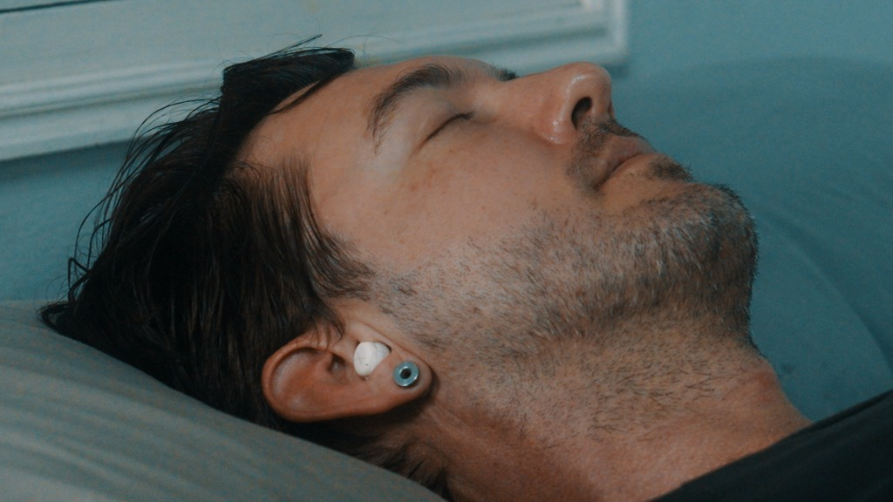

Latest Reviews

SoundMarket Review
Royalty Free Music for YouTube?
I tested SoundMarket to see if its curated catalog and pricing make it a practical alternative to Artlist and Epidemic Sound.
Read the review
MacBook Pro M4 Max Review
The Ultimate Creator Machine?
I put the M4 Max through its paces with 8K BRAW and complex timelines. Is it worth the upgrade?
Read the review
Sony FX30 Setup Guide
Best Settings for Filmmakers
Master your FX30 with my proven settings for S-Log3, Cine EI, and custom button mapping.
Get the guide
SomniPods 3 Sleep Earbuds
Honest Real-World Review
My honest breakdown of the SomniPods 3 after a week of testing for sleep, gym, and boxing. Surprising comfort for side sleepers.
Read Review
Tolifo 100W RGB COB Light
Portable Lighting Review
Real-world brightness, battery life, and travel use cases for Tolifo’s all-in-one RGB COB light after 5 months of use.
Read Review
Aiarty AI Image Enhancer
Upscale, Denoise & Restore
A complete breakdown of Aiarty’s image upscaling, deblurring, face restoration, and pricing for creators.
Read Review
Aiarty AI Video Enhancer
Upscaling & Frame Interpolation
Hands-on results from restoring soft footage, reducing noise, and improving playback with Aiarty’s AI-powered video workflow.
Read Review
Beginner’s Guide to DaVinci Resolve
2025 Workflow Tutorial
Download Resolve, organize media, edit, color, mix audio, and export alongside this step-by-step guide.
Read Guide
DJI Flip Review
Budget Drone or Toy?
Is DJI's budget drone a toy or a travel essential? Testing flight modes and image quality.
Read Review
Bose S1 Pro+ vs Everse 8
Portable PA Showdown
Which battery-powered PA system delivers the best mix of power, portability, and busking features?
Read Review
DJI Mini 3 Pro
The Traveller's Drone
Why this palm-sized drone doubles as a handheld gimbal and remains my go-to for travel b-roll.
Read Review
Sony A7C II Review
Compact Full-Frame Rig
Why this tiny body beats the FX30 when rigged for run-and-gun documentary shoots.
Read Review
Sony A7III Long Term
Still Worth It in 2025?
Why this proven workhorse body still delivers unmatched value for hybrid creators.
Read Review
Zhiyun Weebill 2
Compact Travel Gimbal
A smooth, heavy-duty gimbal for dynamic filmmaking that actually fits in a backpack.
Read Review